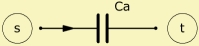

|
 |
| Purpose | Acoustic compliance |
| Type | Network element (2 pole) |
| Domain | Acoustic |
| Used in | System |
AcouCompliance 'Any Name'
Node=s
Ca=
This two-pole element implements an acoustic compliance in the network. This element is used in equivalent circuits if the wavelength is very large compared to the dimensions.
AcouCompliance-elements are two-pole elements, one of the poles always being grounded.
In the frequency domain, the pressure p at the acoustic compliance is equal to p = V/(jω·Ca), in which ω = 2πf is the frequency and V is the volume-velocity. One pole is always grounded.
The acoustic compliance is treated like a capacitance if the flow corresponds to the volume velocity V and the potential to the sound-pressure p.
To understand the acoustic compliance, imagine an air-volume being compressed, but not moved. In other words, compression without acceleration indicates acoustic compliance. The dual case, i.e. acceleration, would be an acoustic mass (see AcouMass).
See at Ca= for details and examples.